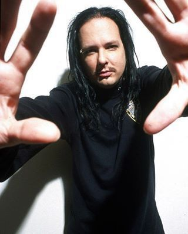
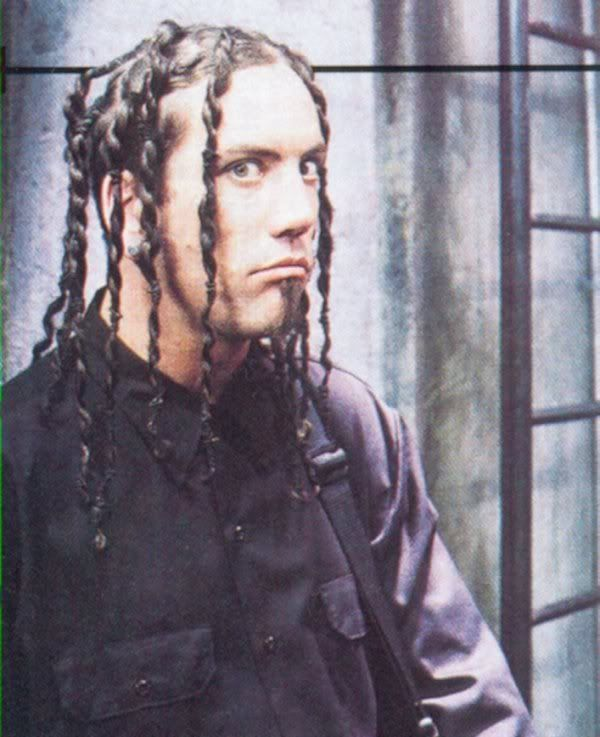
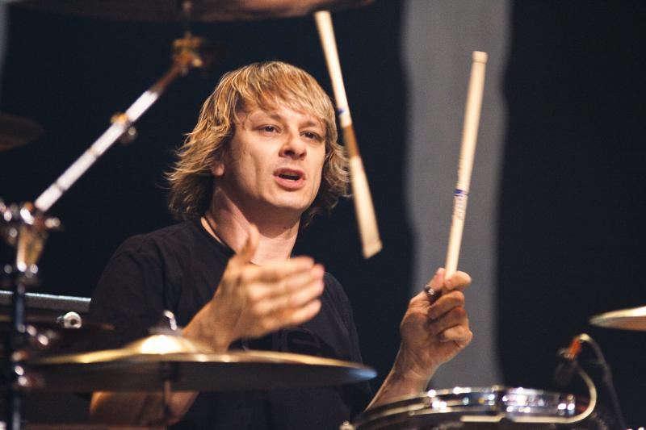
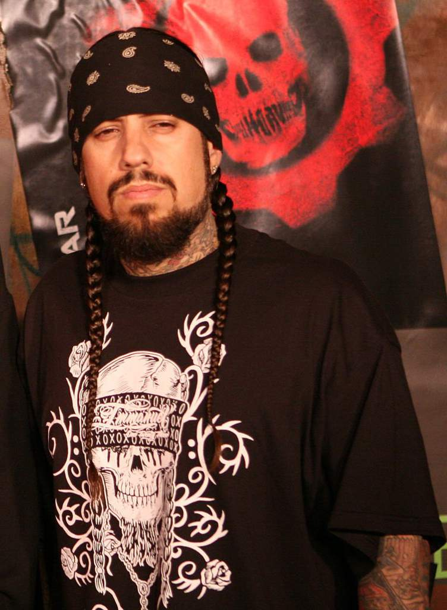

Explorando mais a fundo
Jonathan Davis

Nascido em 1971, é o vocalista e principal letrista do Korn. Sua voz única e letras introspectivas ajudaram a definir o nu metal. Antes do Korn, trabalhou como DJ e em necrotérios.
James "Munky" Shaffer
Nascido em 1970, é um dos guitarristas fundadores da banda. Criou o som pesado e atmosférico do Korn com suas afinações baixas e riffs marcantes.
Brian "Head" Welch

Nascido em 1970, cofundador e guitarrista do Korn. Deixou a banda em 2005 por motivos pessoais e religiosos, retornando em 2013.
Ray Luzier

Nascido em 1970, entrou na banda em 2007 para substituir David Silveria. Antes do Korn, tocou com David Lee Roth e Army of Anyone.
Reginald "Fieldy" Arvizu

Nascido em 1969, é o baixista original do Korn, conhecido por seu estilo percussivo. Está em hiato desde 2021 para focar em questões pessoais.
Feats que valem a pena ser mencionados:
- "Children of the Korn" (com Ice Cube - 1998): Do álbum Follow the Leader, essa colaboração foi uma das primeiras a mesclar rap com nu metal, com Ice Cube oferecendo seus versos agressivos sobre um instrumental pesado, marcando uma fusão entre os gêneros.
- "A Different World" (com Corey Taylor - 2016): Faixa do álbum The Serenity of Suffering, com a participação do vocalista do Slipknot, Corey Taylor. A música combina os vocais intensos de ambos os artistas, criando uma atmosfera sombria e energética.
- "Make Me Bad" (com Fred Durst - 1999): Embora não seja uma colaboração no formato de um feat tradicional, Fred Durst do Limp Bizkit participou da produção de uma das faixas mais marcantes do álbum Issues, trazendo a energia característica de ambos os grupos ao som do Korn.